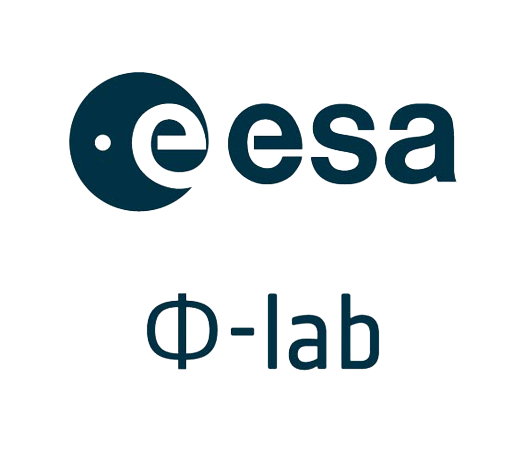
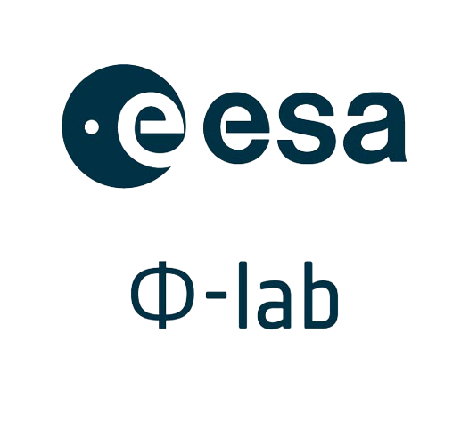

As Earth’s climate continues to undergo extensive changes due to global warming, it is imperative to gain understanding of how high-impact, extreme weather events will change. The detection and tracking of these events is still highly reliant on human-engineered thresholds-based heuristics that are known to be fraught with discrepancies, inconsistencies, and deficiencies of many kinds. For example, differences in heuristics have led to large discrepancies in even the most basic statistics regarding extreme weather events such as their frequency counts. A necessary requirement to accurately characterize extreme weather events in large datasets is to be able to detect and track them robustly and reliably.
To address this challenge, this research project uses data-driven deep learning (DL)-based approaches, which can learn rapidly and reliably from diverse annotations and removes the need for custom, subjective, threshold-based heuristics. Concretely, the work in this project was structured in 3 work packages (WP) that built on top of each other (see illustration in figure 1): WP1 was the collection of thousands of expert-guided crowd-sourced annotations to construct a large scale data set of segmentation masks for atmospheric rivers, tropical cyclones and blocking events. These extreme events share two qualities - they are responsible for catastrophic socioeconomic impacts and are notorious for their complex characteristics, making them almost impossible to detect robustly across diverse datasets and across the globe using human-engineered heuristics. Subsequently, WP2 used the novel dataset created in WP1 for the development of a suite of deep learning models for robust detection of these events. Finally, the utility of these models is demonstrated by WP3 that employs the models from WP2 to characterize extreme weather events in future climate simulations.